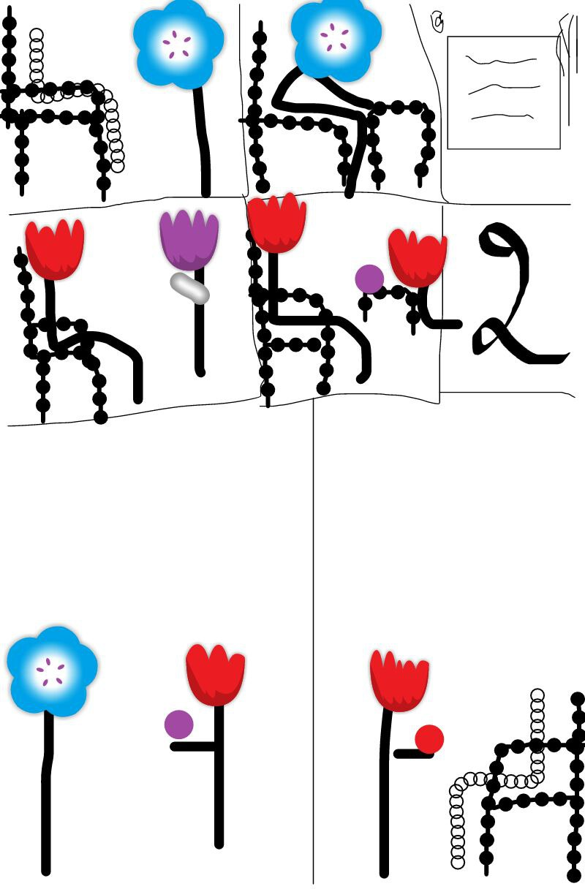

<link rel="icon" href="../img\historiislam.ico" type="image/x-icon">
<link href="../css\style.css" rel="stylesheet" type="text/css"/>
<DOCTYPE html>
<html>
	<head>
		<title>Он вздумал запугать Анаса ибн Малика но был запуган сам</title>
		<meta charset="UTF-8" />
		<meta name="keywords" content="histori, islam, historiislam" />
		<meta name="description" content="История Ислама берёт свое начало от начала пророчества Мухаммада(салаЛлаху алейхи уа саллям) и заканчивается периодом правления Мамлюков.Османцы не были последним халифатом, они принесли в Ислам много нововведений, которые не делали не кто доних" />
	</head>
	<body>
		<div id="a100js" class="a100">
			<div class="b100"></div>
		</div>
	<div id="page-wrap">
		<header>
			<a href="../index.html" title="На главную" id="logo">История Ислама</a>
			<a href="../https://t.me/histori_of_islam" title="На наш канал в телегармме" id="contact">Телеграмм</a>
			<a href="../https://t.me/Islamskiyeviktsrinibot" title="Свяжись с нами" class="obr">Обратная свазь</a>
		</header>
		<div class="clear"><br/></div>
	<center>
		<div id="menu">Меню<hr/></div>
		<div id="menuH">
			<a href="../histori.html">История и Биография</a>
			<a href="../sss.html">Ссылки</a>
			<a href="../vopros.html">Где проходят уроки??</a>
		</div>
	</center>
		<div id="wrapper">
			<div id="back_to_top" class="back-to-top">
				
			</div>
			<div id="home"><a href="../index.html"></a></div>
            <div id="home"><a href="../histori.html"></a></div>
			<div id="articles">
				
					<div class="text"><center><h1>Он вздумал запугать Анаса ибн Малика но был запуган сам</h1></center>
					<div class="clear"><br/></div>
                    
                    <div class="clear"><br></div>
		       <h2>Кто вздумал запугать Анаса?<br><br></h2>


               <p><b>Однажды Хаджадж ибн Юсуф вызвал к себе Анаса ибн Малика,и когда тот вошёл, Хаджадж в гневе сказал ему: «Что ты хочешь, Унейс (Уменьшительно-унизительная форма имени Анас)? Что с тобой — день ты с ‘Али, день с Ибн Зубейром и день с Ибн Аш‘асом? Я буду погонять тебя так, как погоняют барана, и заставлю истекать кровью так, как течёт дерево смолой! Уйди отсюда, и пусть Аллах лишит тебя слуха!» Анас произнёс: «Все мы принадлежим Аллаху, и все мы вернёмся к Нему.
                
                Если бы не мои маленькие дети, то мне было бы всё равно, как я буду казнён и какой смертью умру». После этих слов он вышел от Хаджаджа и написал письмо ‘Абд-аль-Малику ибн Марвану, сообщив ему о том, что произнёс Хаджадж. Когда халиф прочитал это послание, его гневу и удивлению не было предела. В этом письме было следующее: «Во имя Аллаха, Милостивого, Милосердного. К повелителю правоверных, ‘Абд-аль-Малику ибн Марвану, от Анаса ибн Малика. Знай, что Хаджадж заставил меня выслушать ругательства, которые он произнёс по моему адресу, и я не хотел.
                Слышать подобное. Спроси с него за моё оскорбление, ибо я умру слугой Посланника Аллаха, да благословит его Аллах и приветствует, и его сподвижником. Мир тебе, милость Аллаха и Его благословение». В другой версии этой истории говорится, что Анас ибн Малик написал следующее: «Если бы кто-то из людей был слугой у Исы ибн Марьям, или даже его сподвижником, или одним из тех, кто видел его, и про него узнали бы христиане, то их правители отправились бы к нему. Он был бы великим, заняв место в их сердцах.
                Или если бы человек был слугой Мусы или видел его, и иудеи узнали бы про этого человека, они бы возвеличили его и возлюбили настолько, насколько смогли. Я же— слуга Посланника Аллаха, да благословит его Аллах и приветствует, его сподвижник и человек, видевший его. Я ел вместе с ним и ходил вместе с ним. Мы вместе сражались против его врагов, но сейчас Хаджадж оскорбил меня и совершил больше этого». Мухаммад ибн Зубейр сказал: «Те, кто были в тот момент рядом с ‘Абд-аль-Маликом, рассказали мне о том, что он, прочитав письмо, разгневался и заплакал, не в силах сдержать себя». ‘Абд-аль-Малик тут же написал два письма и приказал Исмаилу ибн Убейдаллаху доставить их адресатам. Он сказал: «Возьми их и отправляйся в Ирак. Начни с Анаса ибн Малика, передай ему моё послание и скажи: “О Абу Хамза! Я написал письмо проклятому Хаджаджу, и если тот прочитает его, то станет послушнее по отношению к тебе, чем твоя рабыня”». Когда Исмаил прибыл к Хаджаджу, тот обрадовался и сказал: «Я приветствую того человека, которого люблю, и радуюсь встрече с ним». Но Исмаил сказал:
                «Клянусь Аллахом, я тоже люблю встречаться с тобой, но только не в этот раз». В этот момент Хаджадж испугался, и цвет его лица
                
                изменился. Он спросил: «Так с чем же ты прибыл ко мне?» Исмаил ответил: «Я покинул правителя правоверных в тот момент, когда он был в ужасном гневе на тебя». Хаджадж вскочил со своего места, и Исмаилбросил ему послание халифа, которое тот принялся читать.
                Он читал его, смотря то на письмо, то на Исмаила, истекая потом, а когда закончил чтение, сказал: «Давай отправимся к Абу Хамзе и будем просить его прощения и добиваться его довольства!» Исмаил ответил: «Не спеши». Но Хаджадж возразил: «Как мне не спешить в тот момент, когда со мной произошло то, что я никогда не забуду?!» В письме к Хаджаджу было написано следующее: «Во имя Аллаха, Милостивого, Милосердного. От повелителя правоверных, ‘Абд-аль-Малика ибн Марвана, к Хаджаджу ибн Юсуфу. Ты — всего лишь раб, который натворил дел и вознёсся без права. Ты перешёл пределы дозволенного, совершив этот поступок. Когда я веду тебя, ты следуешь по моим стопам, а когда оставляю, ты тут же отворачиваешься! Пусть проклянёт тебя Аллах за того раба, который почти ослеп! Неужели ты забыл бедствия своих предков в Таифе и то, как они рыли себе колодцы?! Как ты забыл о том, что твоё племя носило камни на себе, а твоя мать высушивала гроздья винограда! Я буду гнать тебя так, как волк гонит лисицу или сокол — зайца. Как ты посмел досадить сподвижнику Посланника Аллаха, да благословит его Аллах и приветствует?!! Ты должен смотреть на его достоинства и закрывать глаза на его недостатки. Ты нарушаешь договор с Аллахом и дерзаешь выступать против Него! Клянусь Аллахом, если христиане или иудеи прознали бы про человека, который прислуживал их пророкам, они бы возвысили его, почитали и любили. Нет, даже если
                
                бы они знали про человека, который ухаживал за ослом Исы или Узейра, они бы возвысили и его. Но как же произошло то, что Анас ибн Малик, который был слугой Посланника Аллаха, да благословит его Аллах и приветствует, в течение восьми лет, выслушал от тебя такое?! Ведь он — один из немногих живущих сейчас сподвижников!
                Когда ты получишь это письмо, то будь послушнее по отношению к Анасу ибн Малику, чем его собственные сандалии. В противном случае я отправлю по твоему адресу стрелу, которая не промахнётся».
                Таково было унижение «великого» Хаджаджа в мирской жизни, так что же ждёт его в Вечной обители?!<br>
                
                В книге «100 историй о кончине несправедливых» автор ( Хани аль Хадж) в Русской версии на страницы 150-153 или 151-154</b></p>
				</div>
			</div>
		</div>
	</div>
		<footer>
			<span id="histori">Самая актуальная история на 2023 год &copy;</span>
			<span id="con"><a href="https://t.me/histori_of_islam"></a></span>
		</footer>
		<script src="../js/jquery.js"></script>
		<script src="../js/index.js"></script>
	</body>
</html>